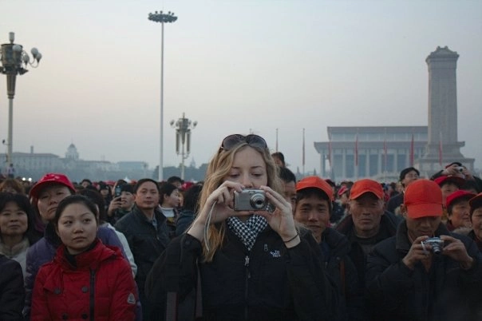
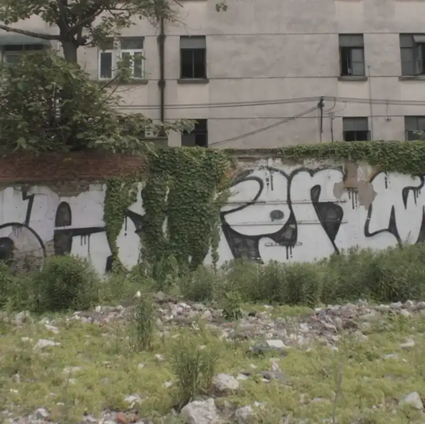
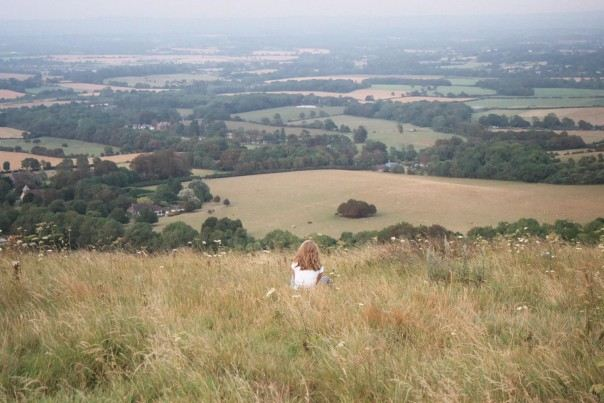
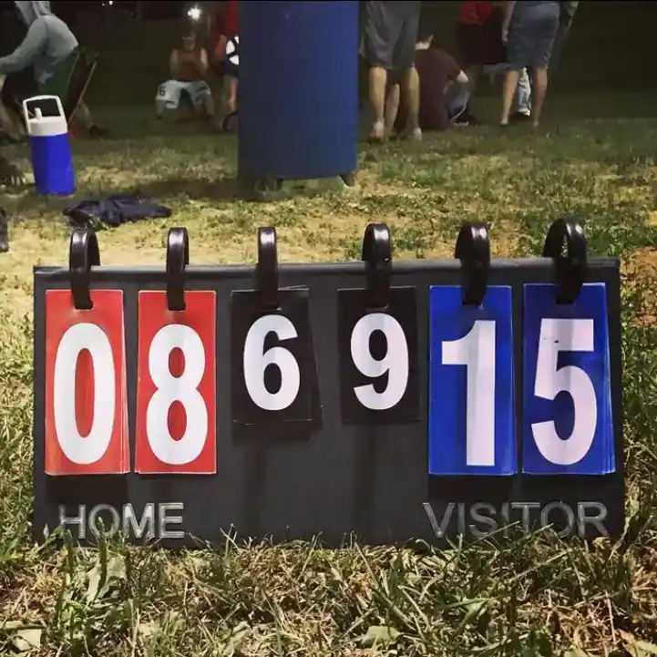
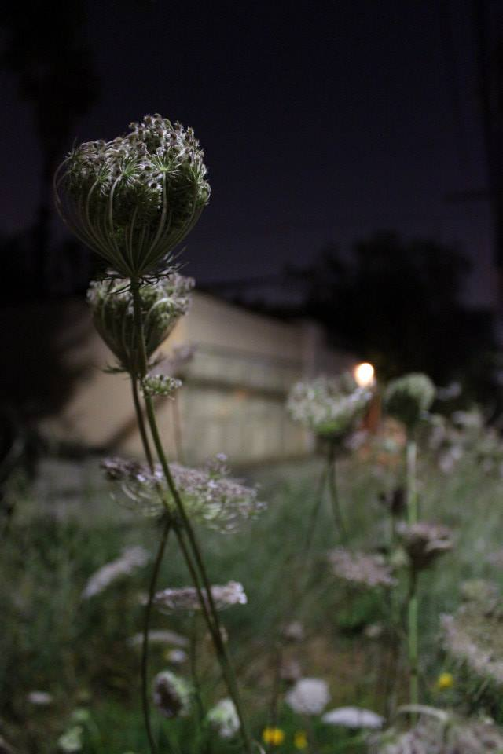
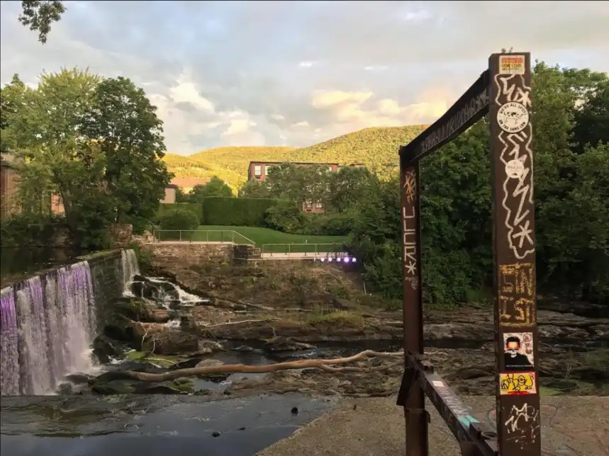
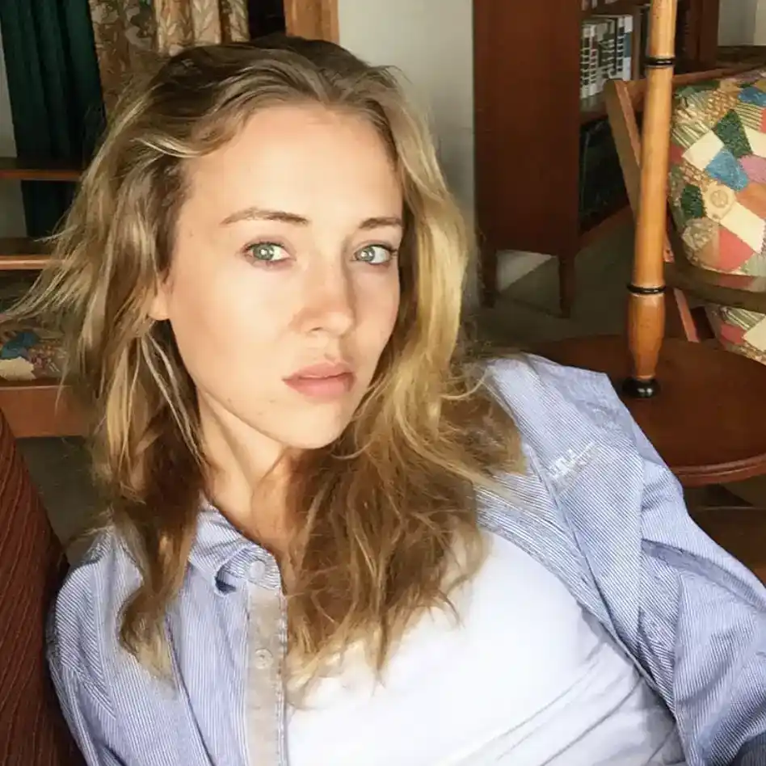

Crossing the border from Ranong, Thailand into Kawthaung, Myanmar

Elizabeth in Tiananmen Square, Beijing, PRC

Seen in Shanghai, PRC

Self portrait - The Downs, EnglandA personal software engineering project, optimizing the Benjamin Moore Paints API for lookup in O(1) timeOctober chrysanthemums

East Fishkill Ultimate Frisbee

Queen Anne's Lace by night

An urban waterfall in Beacon, NY

Self portrait - Ithaca, New York
 E. Alex McIntire
E. Alex McIntire